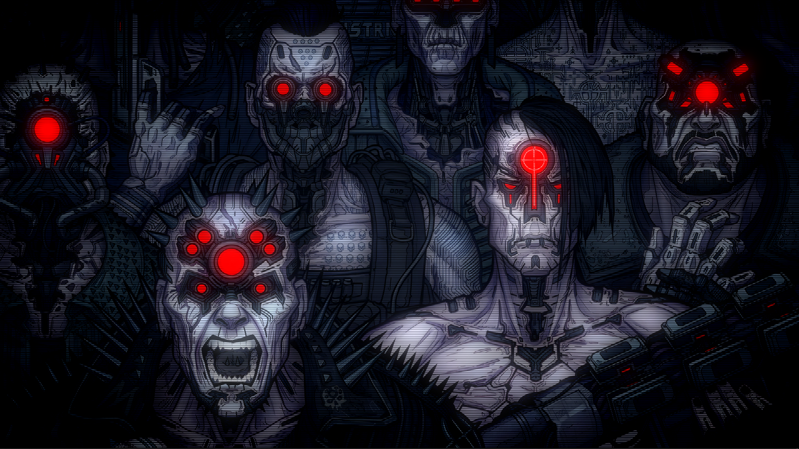
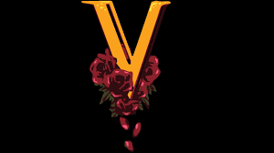
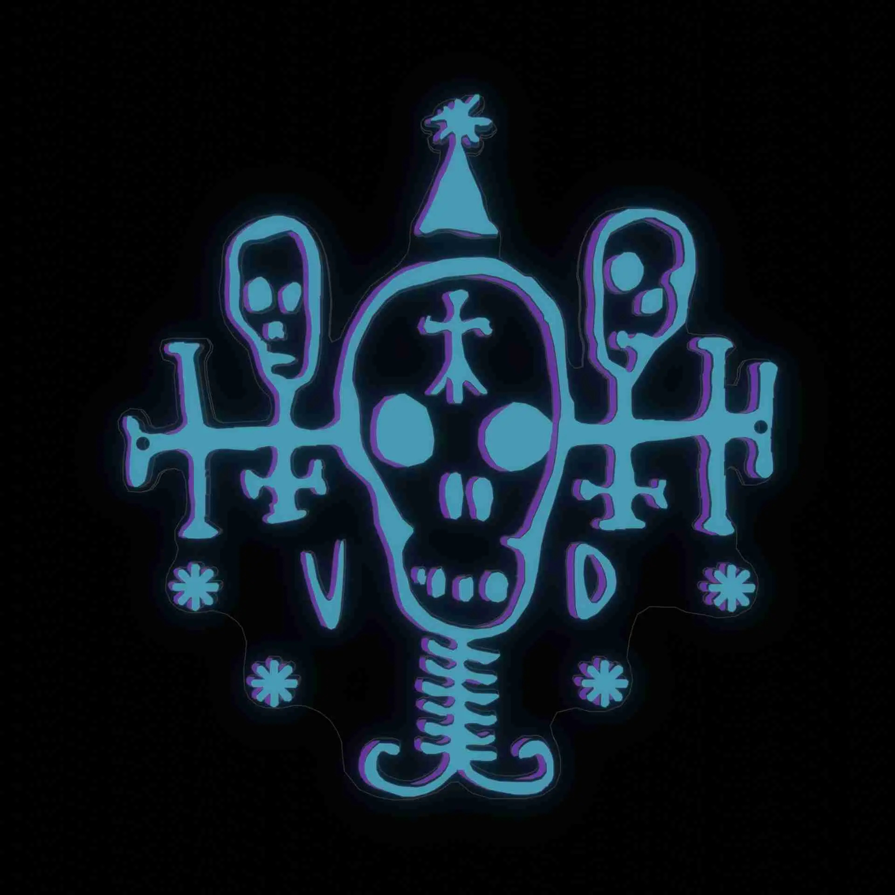
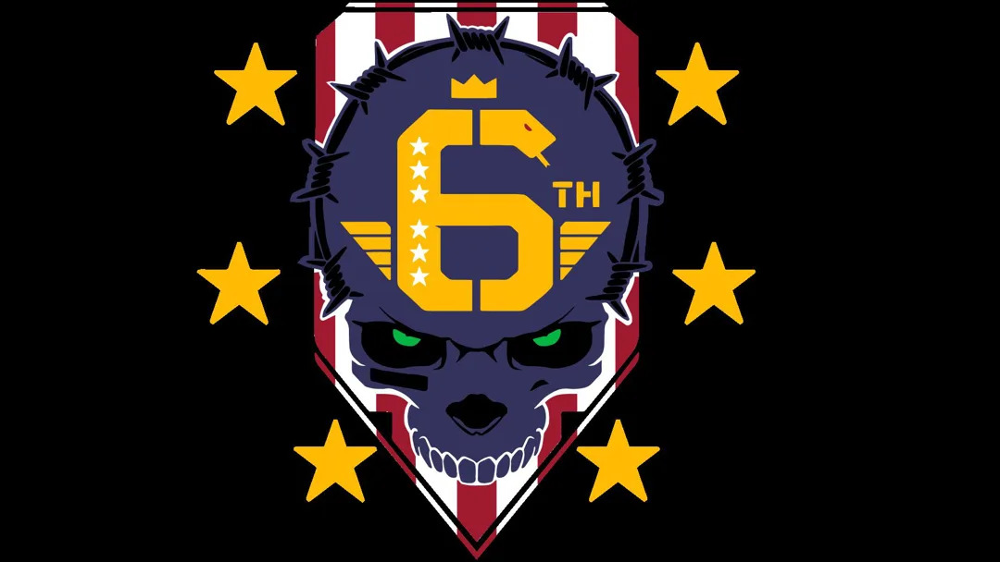
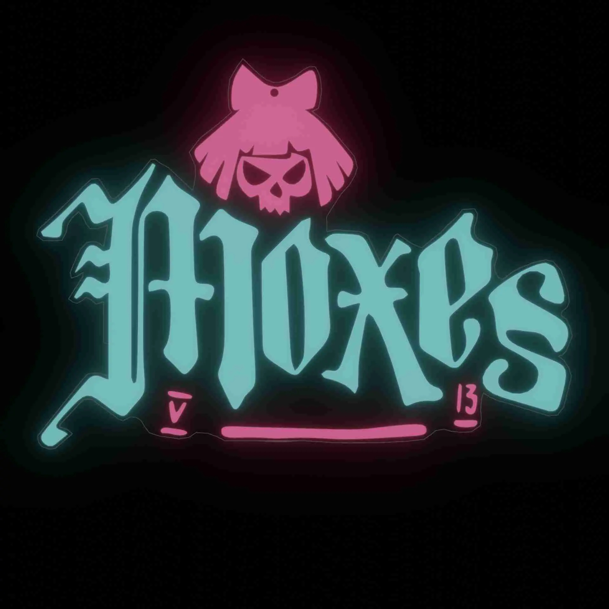
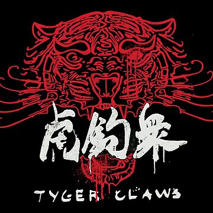
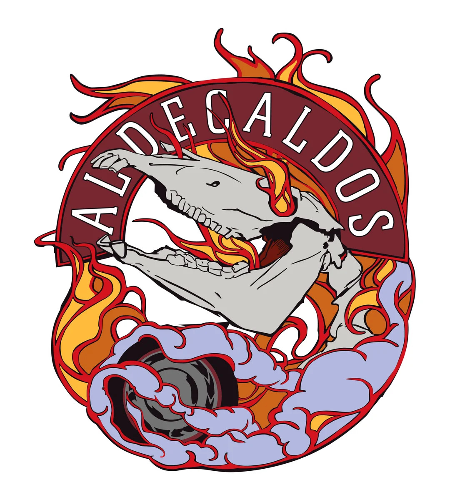

MAELSTROM
Cyberpsicóticos extremamente modificados, baseados em Pacifica. Adoram violência e implantes cibernéticos radicais.
VALENTINOS
Gangue latina que controla Heywood, especialmente o distrito de Wellsprings. Têm um código de honra e laços familiares fortes.
GAROTOS VODOOS
Hackers elite de Pacifica, especializados em invasões cibernéticas. Têm laços com o submundo digital.
GAROTOS DA RUA 6
Ex-militares nacionalistas que agem como vigilantes em Santo Domingo, mas são tão violentos quanto outras gangues.
MOXES
Gangue que protege trabalhadores sexuais em Kabuki, formada após a queda de Lizzie Borden.
GARRAS DE TIGRE
Gangue poderosa de Westbrook e Japantown, ligada à Yakuza. Controlam prostituição, drogas e cassinos ilegais.
ALDECALDOS
Diferente das gangues urbanas de Night City, eles vivem em caravanas móveis, viajando pelas estradas da América pós-colapso, sobrevivendo com comércio, contrabando e missões mercenárias.